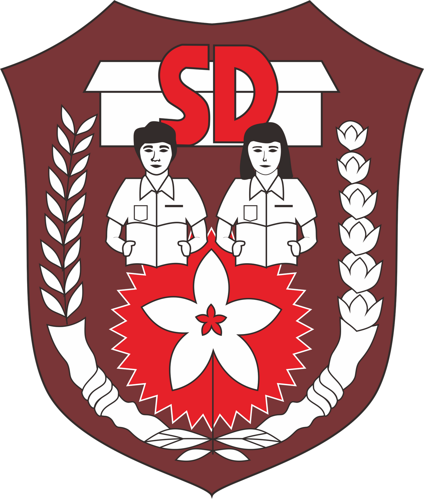

SD NEGERI 1 PURWAWINANGUNN
2010 - 2016
Kabupaten Kuningan Jawa Barat
Web ini dibuat untuk memenuhi tugas akhir dari mata kuliah pemrograman web semester 1
SD NEGERI 1 PURWAWINANGUNN
2010 - 2016
Kabupaten Kuningan Jawa Barat
SMP NEGERI 1 KUNINGAN
2016 - 2019
Kabupaten Kuningan Jawa Barat
SMK NEGERI 3 KUNINGAN
2019 - 2022
Kabupaten Kuningan Jawa Barat
YODI NUR ROHMAN
NIM: 10123429 (IF-11)
Fakultas Teknik dan Ilmu Komputer
Universitas Komputer Indonesia
Hobi pertama saya adalah futsal. kenapa? karena futsal bukan hanya olahraga yang menyenangkan, tetapi juga dapat memperkuat tubuh, meningkatkan keterampilan motarik, dan membangun kerjasama tim.
Buku merupakan sumber informasi yang dapat menambah wawasan dan pengetahuan kita tentang berbagai hal seperti ilmu pengetahuan, ekonomi, politik, sosial, budaya, teknologi, dan sebagainya. Oleh karena itu saya selalu membiasakan diri saya untuk rajin dan pintar dalam membaca dan memahami isi bacaan dalam buku.
Meningkatkan suasana hati adalah tujuan utama saya saat mendengarkan musik. Karena saat saya mendengarkan music, mood atau suasana hati saya akan lebih tenang dan bersemangat. Salah satu band favorit saya adalah Dewa-19 dengan lirik lagunya yang indah dan penuh makna.